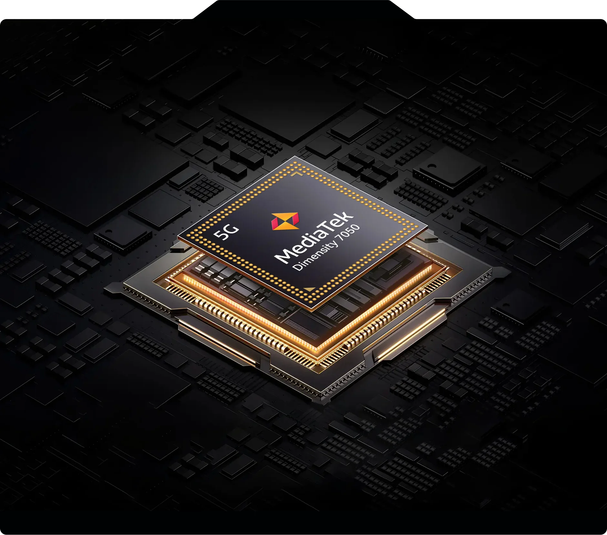
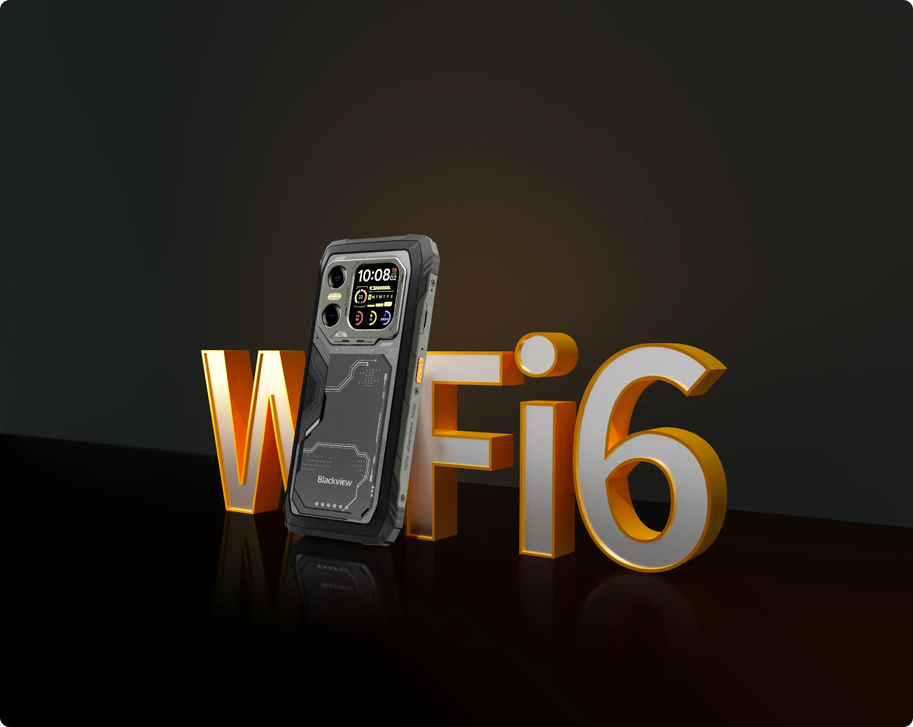
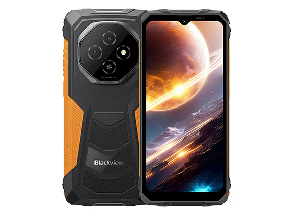
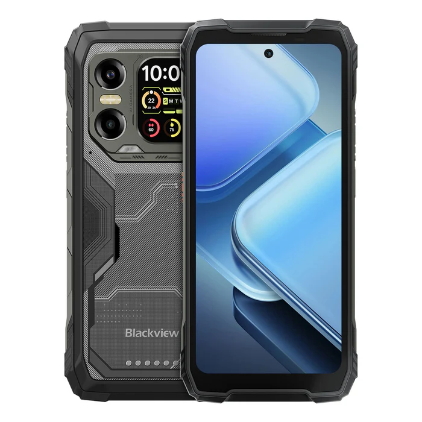
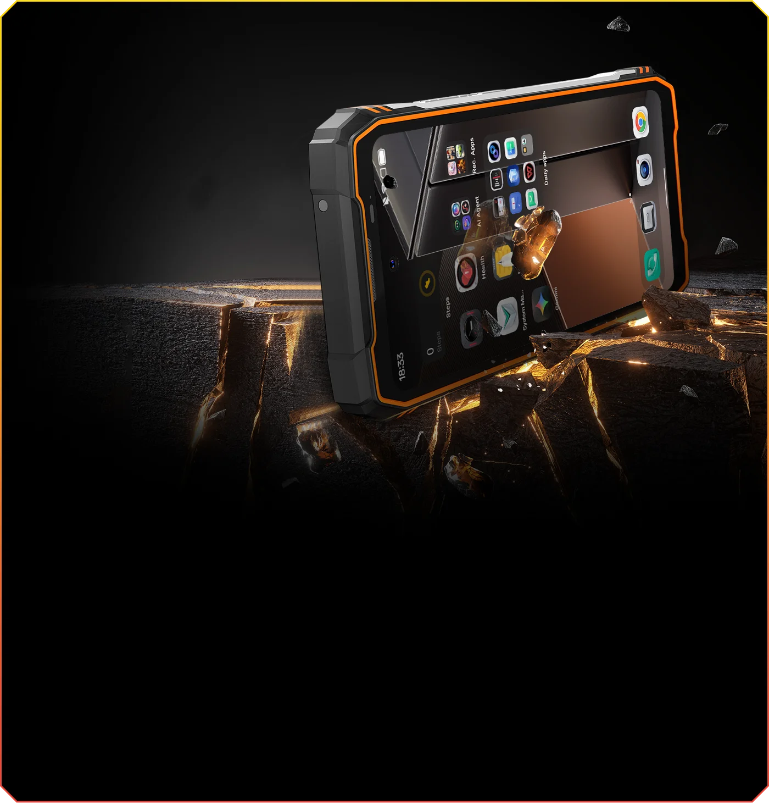
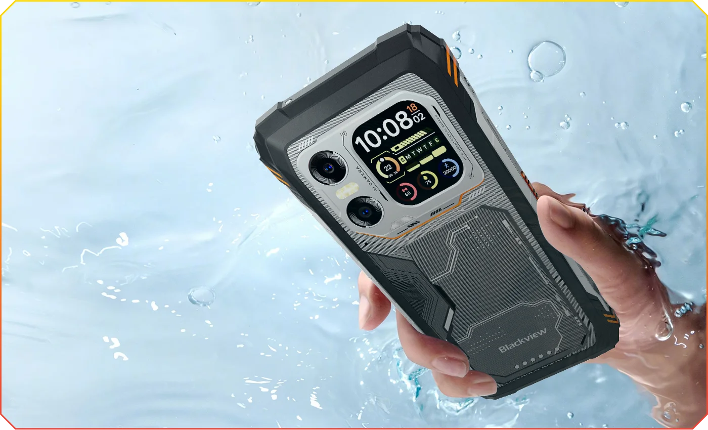
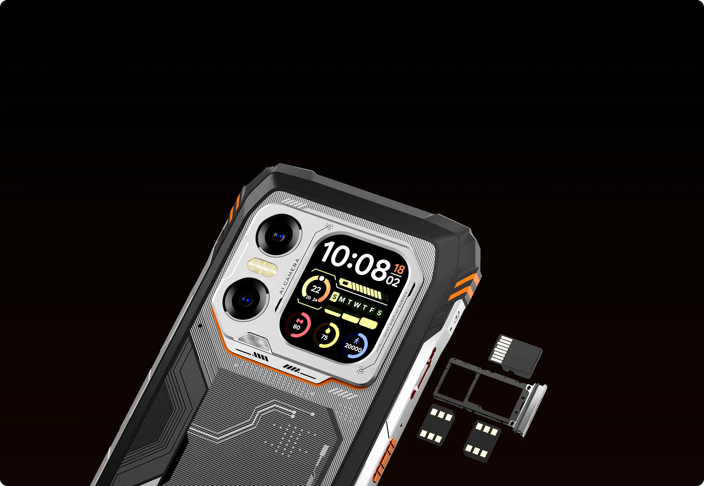

Sortir de cette prison météorologique, c'était devenu urgent. Après des semaines de pluie incessante, j'ai enfin pu reprendre la route pour tester ce Blackview Xplore X1 dans les conditions réelles du motard. Direction le massif des Bauges, là où les routes serpentent entre sommets enneigés et où un téléphone renforcé peut vraiment montrer ce qu'il a dans le ventre.
🛣️ La route en bref

Une sortie d'essai dans le massif des Bauges, parfaite pour mettre à l'épreuve un équipement de navigation en conditions hivernales. Routes de montagne sinueuses, températures fraîches et luminosité changeante - exactement ce qu'il faut pour tester un téléphone renforcé en situation réelle.
- Distance : Boucle de quelques heures dans les Bauges
- Difficulté : Facile à modérée, routes goudronnées
- Type de parcours : Routes de montagne, lacets et panoramas
- Meilleure saison : Avril à octobre pour éviter les conditions hivernales
🫀 Ce qui m'a marqué

L'écran qui ne lâche rien

Premier test concluant : la lisibilité de l'écran. Même avec cette luminosité changeante du jour, typique de nos sorties hivernales, l'écran reste parfaitement visible. J'avais Waze qui tournait, et franchement, aucun souci pour lire les indications. C'est un point crucial quand on navigue en montagne.
Cette autonomie de malade

20 000 mAh, ça paraît énorme sur le papier. En pratique ? J'ai fait le test : chargé à 100%, laissé 3 semaines dans le garage à 10°C, et il me restait encore 44% de batterie. Pour une journée complète de road trip avec navigation GPS active, on est vraiment serein côté autonomie.
Le poids, revers de la médaille

Bon, soyons honnêtes : 400 grammes, ça se sent. Dans le sac à dos, aucun problème. Mais dans la poche de la veste moto, tu le remarques vite. C'est le prix à payer pour cette batterie monstrueuse et cette robustesse certifiée.
Pour celui qui fait de la piste ou du off-road, ce téléphone ne craint ni la poussière ni les projections d'eau. Il va même sous l'eau, ce qui est rassurant quand on traverse des gués. Je pense qu'il sera plus destiné à ceux qui vont dans des régions, difficile, froid , chaud ou pluie extrême.
🏍️ Pourquoi tu dois y aller

Cette philosophie du téléphone dédié au voyage, elle me parle vraiment. Imagine : ton iPhone à 700 balles qui se prend une gamelle sur un parking de col, et hop, plus rien. Là, pour 300 euros environ, tu as un vrai téléphone Android avec toutes les applis de navigation qui fonctionnent parfaitement.
L'idée, c'est de préserver ton téléphone personnel tout en ayant un équipement fiable pour tes road trips. Navigation GPS, appareil photo en 2K, lampe torche intégrée, et même la possibilité de recharger un autre appareil - c'est presque une batterie externe qui fait téléphone.
Les spécifications sont vraiment haut de gamme : processeur 8 cœurs, jusqu'à 32 Go de RAM, capteurs Samsung et Sony. Pour de la navigation GPS, c'est un peu comme avoir une Ferrari pour aller chercher le pain !
Et puis il y a cette tranquillité d'esprit : pluie, chocs, poussière, températures extrêmes - il encaisse. Parfait pour celui qui ne veut pas risquer son téléphone perso en voyage ou qui fait du trail et de l'off-road.
✨ Le mot de la fin

Après ce premier test sur le terrain, je dois dire que ce Blackview tient ses promesses. Oui, il est lourd. Oui, la qualité vidéo pourrait être meilleure (pas de 4K). Mais pour un téléphone de voyage à 300 euros qui ne craint rien et tient un mois en veille, le rapport qualité-prix est séduisant.
Mon conseil ? Si tu cherches un deuxième téléphone pour tes road trips, que tu veux préserver ton téléphone principal ou que tu fais du tout-terrain, cette solution mérite vraiment le coup d'œil. Moi, je vais continuer à le tester sur de plus longs voyages pour voir ce qu'il donne en conditions réelles d'utilisation intensive.